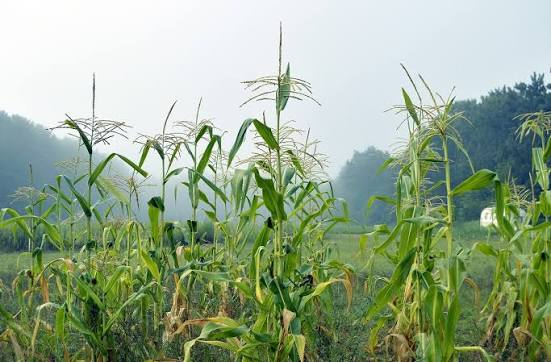
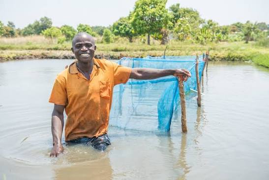
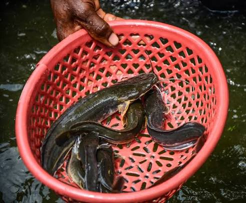
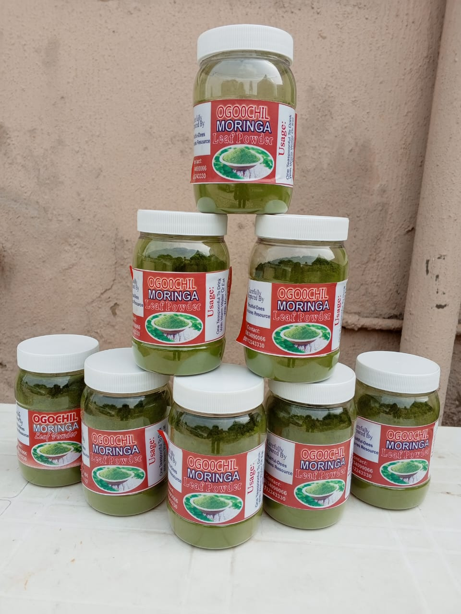
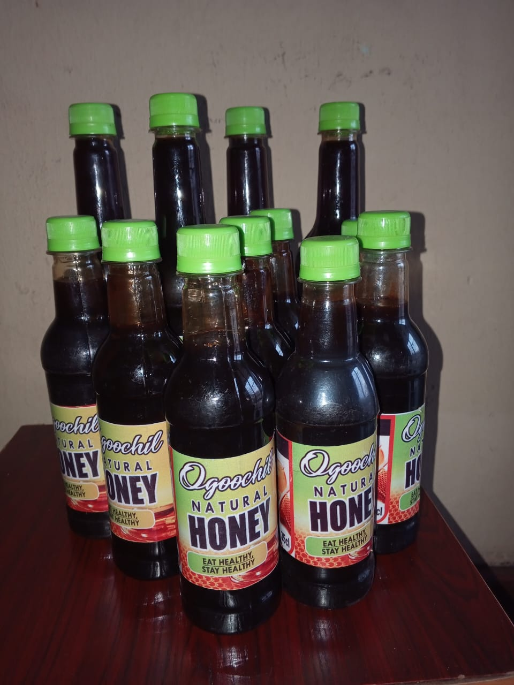
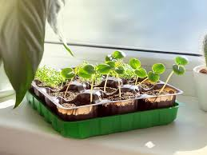
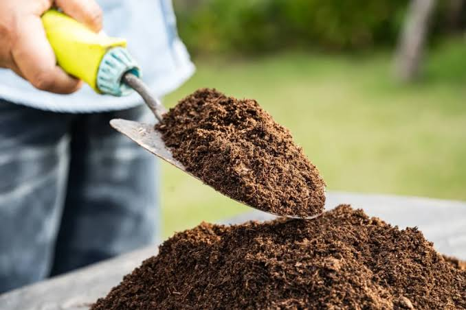
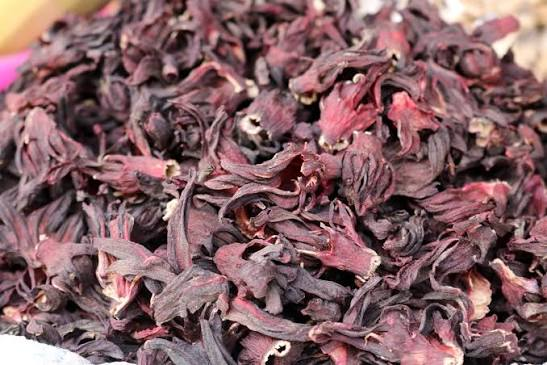
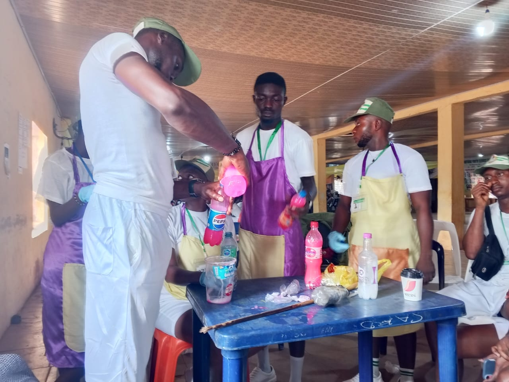
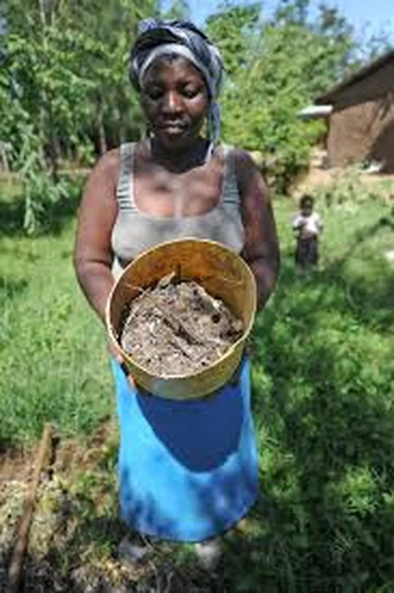

Sustainable Farming
Modern crop cultivation and aquaculture practices designed to improve productivity while protecting natural resources.
Fruitful Dees Ventures Resource empowers individuals, families, businesses, and communities through modern farming, aquaculture, agro-processing, quality farm inputs, professional consultancy, and practical agricultural training.
Delivering sustainable farming, premium agricultural products, training, consultancy, and agribusiness support for stronger communities.
We combine sustainable farming, quality products, practical training and professional consultancy to create lasting agricultural solutions for families, businesses and communities.
Modern crop cultivation and aquaculture practices designed to improve productivity while protecting natural resources.
Hands-on agricultural training that equips individuals and businesses with real skills for successful agribusiness.
Fresh agricultural produce, premium farm inputs, organic products and value-added goods delivered with quality assurance.
Professional guidance for farm establishment, agribusiness planning, technical support and sustainable growth.


Agribusiness Solutions
Fruitful Dees Ventures Resource is committed to advancing agriculture through sustainable farming, aquaculture, agro-processing, quality agricultural inputs, consultancy and practical training that empower individuals, families and businesses.
Crop & Cash Crop Production
Fish Farming & Aquaculture
Agro Processing & Value Addition
Agricultural Consultancy & Training
We provide innovative agricultural services that support sustainable farming, agribusiness growth and food production from farm to market.
Cultivation of vegetables, cassava, hibiscus (zobo), moringa and other food and cash crops using modern farming practices.
Learn More arrow_forwardBreeding, rearing and production of quality catfish and other aquaculture species for commercial supply.
Learn More arrow_forwardValue addition through fish smoking, moringa powder, liquid organic manure and other processed products.
Learn More arrow_forwardSupply of quality seeds, seedlings, fertilizers, nutrients and essential agricultural inputs for improved productivity.
Learn More arrow_forwardPractical workshops and hands-on training in crop farming, fish farming and agribusiness development.
Learn More arrow_forwardProfessional farm planning, agribusiness advisory, technical support and sustainable agricultural development services.
Learn More arrow_forwardExplore a selection of quality agricultural products carefully produced and supplied to support healthy living, sustainable farming and agribusiness success.

AquacultureHealthy, fresh and carefully raised catfish for homes, restaurants and commercial buyers.
Enquire Now
OrganicPremium moringa leaf powder processed with quality standards for nutrition and wellness.
Enquire Now
NaturalPure, natural honey sourced with care and supplied for homes and businesses.
Enquire Now
Farm InputsQuality seeds and healthy seedlings for improved crop production and sustainable farming.
Enquire Now
OrganicEco-friendly fertilizer formulated to improve soil health and crop productivity.
Enquire Now
Crop ProduceFreshly cultivated hibiscus suitable for food, beverages and commercial processing.
Enquire NowWe equip aspiring farmers, entrepreneurs and agribusiness owners with practical skills, technical knowledge and professional guidance to build sustainable and profitable agricultural ventures.
Fish Farming & Aquaculture
Crop & Cash Crop Production
Farm Planning & Agribusiness
Processing & Value Addition

Building Skills for Sustainable Agriculture
Agricultural Services
Training Participants
Happy Customers
Products Supplied
Trusted by farmers, families and agribusiness owners across our community.
"The practical fish farming training gave me the confidence to start my own business. The support after the training was exceptional."

"The consultancy and farm inputs improved our harvest tremendously. Their team is knowledgeable and trustworthy."
"Professional service, quality agricultural products and practical training. I highly recommend Fruitful Dees Ventures Resource."
Watch how we carefully process and preserve smoked fish while maintaining quality and hygiene standards for our customers.
Find answers to common questions about our agricultural services, products and training programmes.
Yes. We supply both individuals and commercial buyers, depending on product availability.
Yes. Our training combines classroom guidance with practical, hands-on demonstrations.
Absolutely. We provide consultancy, farm planning, management support and technical guidance.
You can reach us by phone, WhatsApp, email or by using the contact form on our Contact page.
Whether you need quality farm products, practical agricultural training or expert consultancy, Fruitful Dees Ventures Resource is here to help you succeed.